Candidate List 20260301 Previous Day Next Day Section 1: New Sources (age<1d) Cosmological Afterglow
Section 2: Old (1-5d) sources observed last night placeholder
Section 1: New Afterglow/FBOT Cands Last Night (1)
1. ZTF26aaizkym (Afterglow?) [Back to Top] [Share] [Trigger Swift] [Fritz ] [Lasair ]RA, Dec: 165.3753, 73.03743 11h 1m30.07s, 73d 2m14.76sGalactic (l, b): 133.33686, 41.79697 ext(g-r) = 0.067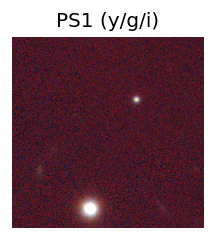 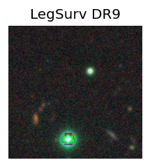 Consistent with synchrotron, g-r>0!
Section 2: Older Sources Observed Last Night (28)
0. ZTF26aahboup (Afterglow?FBOT?) [Back to Top] [Share] [Trigger Swift] [Fritz ] [Lasair ]RA, Dec: 133.84832, 39.42391 8h55m23.60s, 39d25m26.08sGalactic (l, b): 182.83427, 40.05641 ext(g-r) = 0.025LegacySurvey: 1 sources in 3 arcsec Closest: d = 2.24 arcsec, 260.8 deg (east of north) photoz=0.15 (68% bounds 0.04, 0.4), type=EXP peak abs mag = -19.99 (68% bounds -16.95, -22.38) Consistent with synchrotron, g-r>0!
1. ZTF26aahcbch (FBOT?) [Back to Top] [Share] [Trigger Swift] [Fritz ] [Lasair ]RA, Dec: 87.71142, 36.37969 5h50m50.74s, 36d22m46.88sGalactic (l, b): 174.17738, 4.77362 ext(g-r) = 0.671PS1: 1 source in 3 arcsec Closest: d = 0.60 arcsec photoz=1.15+/-0.19 peak abs mag = -28.46
2. ZTF26aahcrcb (FBOT?) [Back to Top] [Share] [Trigger Swift] [Fritz ] [Lasair ]RA, Dec: 273.37525, 68.84179 18h13m30.06s, 68d50m30.46sGalactic (l, b): 99.0184, 28.56639 ext(g-r) = 0.058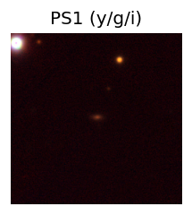 LegacySurvey: 1 sources in 3 arcsec Closest: d = 0.13 arcsec, 312.5 deg (east of north) photoz=0.12 (68% bounds 0.09, 0.14), type=SER peak abs mag = -19.57 (68% bounds -18.86, -19.82) Consistent with synchrotron, g-r>0!
3. ZTF26aahemjp (Afterglow?) [Back to Top] [Share] [Trigger Swift] [Fritz ] [Lasair ]RA, Dec: 93.11589, 17.9151 6h12m27.81s, 17d54m54.38sGalactic (l, b): 192.61595, -0.17496 ext(g-r) = 10.688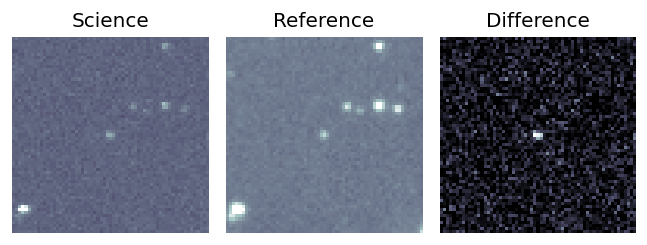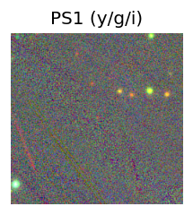
4. ZTF26aahghbt (FBOT?) [Back to Top] [Share] [Trigger Swift] [Fritz ] [Lasair ]RA, Dec: 126.50531, -13.05671 8h26m1.27s, -13d-3m-24.15sGalactic (l, b): 235.95566, 14.16504 ext(g-r) = 0.057PS1: 1 source in 3 arcsec Closest: d = 1.60 arcsec photoz=0.13+/-0.03 peak abs mag = -20.28
5. ZTF26aahgjws (FBOT?) [Back to Top] [Share] [Trigger Swift] [Fritz ] [Lasair ]RA, Dec: 125.39845, -6.00956 8h21m35.63s, -6d 0m-34.41sGalactic (l, b): 229.1399, 16.94953 ext(g-r) = 0.052LegacySurvey: 1 sources in 3 arcsec Closest: d = 1.45 arcsec, 255.0 deg (east of north) photoz=0.5 (68% bounds 0.3, 0.9), type=REX peak abs mag = -23.61 (68% bounds -22.29, -25.13) Consistent with synchrotron, g-r>0!
6. ZTF26aahigro (Afterglow?) [Back to Top] [Share] [Trigger Swift] [Fritz ] [Lasair ]RA, Dec: 178.42048, 5.62578 11h53m40.91s, 5d37m32.82sGalactic (l, b): 267.7653, 64.47877 WARNING: 4.53 deg from ecliptic plane ext(g-r) = 0.017LegacySurvey: 1 sources in 3 arcsec Closest: d = 0.49 arcsec, 279.8 deg (east of north) photoz=0.09 (68% bounds 0.08, 0.1), type=SER peak abs mag = -18.8 (68% bounds -18.58, -18.99)
7. ZTF26aahixfn (FBOT?) [Back to Top] [Share] [Trigger Swift] [Fritz ] [Lasair ]RA, Dec: 172.7169, 20.28023 11h30m52.06s, 20d16m48.84sGalactic (l, b): 229.00642, 70.35733 ext(g-r) = 0.023LegacySurvey: 1 sources in 3 arcsec Closest: d = 0.19 arcsec, 226.9 deg (east of north) photoz=0.76 (68% bounds 0.48, 1.05), type=REX peak abs mag = -24.59 (68% bounds -23.36, -25.43)
8. ZTF26aahjmpm (Afterglow?) [Back to Top] [Share] [Trigger Swift] [Fritz ] [Lasair ]RA, Dec: 155.09303, 35.99365 10h20m22.33s, 35d59m37.14sGalactic (l, b): 187.90008, 56.84642 ext(g-r) = 0.01LegacySurvey: 1 sources in 3 arcsec Closest: d = 7.02 arcsec, 206.3 deg (east of north) photoz=0.1 (68% bounds 0.09, 0.12), type=SER peak abs mag = -18.95 (68% bounds -18.58, -19.27) Consistent with synchrotron, g-r>0!
9. ZTF26aahkwud (Afterglow?) [Back to Top] [Share] [Trigger Swift] [Fritz ] [Lasair ]RA, Dec: 275.10273, -16.89347 18h20m24.66s, -16d-53m-36.48sGalactic (l, b): 14.41646, -1.00673 ext(g-r) = 6.314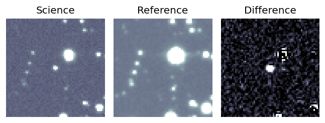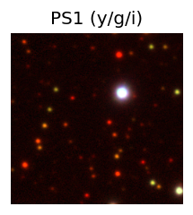
10. ZTF26aahpkqy (FBOT?) [Back to Top] [Share] [Trigger Swift] [Fritz ] [Lasair ]RA, Dec: 169.76846, 0.87315 11h19m4.43s, 0d52m23.35sGalactic (l, b): 258.91502, 55.64312 WARNING: -3.25 deg from ecliptic plane ext(g-r) = 0.034peak abs mag = -19.52 LegacySurvey: 1 sources in 3 arcsec Closest: d = 1.37 arcsec, 230.4 deg (east of north) photoz=0.12 (68% bounds 0.1, 0.15), type=REX peak abs mag = -20.15 (68% bounds -19.6, -20.67) Consistent with synchrotron, g-r>0!
11. ZTF26aahpovy (Afterglow?) [Back to Top] [Share] [Trigger Swift] [Fritz ] [Lasair ]RA, Dec: 106.79155, -1.96131 7h 7m9.97s, -1d-57m-40.71sGalactic (l, b): 216.47353, 2.60144 ext(g-r) = 0.44
12. ZTF26aahvwcf (Afterglow?) [Back to Top] [Share] [Trigger Swift] [Fritz ] [Lasair ]RA, Dec: 284.30971, -10.89513 18h57m14.33s, -10d-53m-42.48sGalactic (l, b): 23.85186, -6.2176 ext(g-r) = 0.472
13. ZTF26aaibaza (Afterglow?) [Back to Top] [Share] [Trigger Swift] [Fritz ] [Lasair ]RA, Dec: 167.19962, -6.76905 11h 8m47.91s, -6d-46m-8.58sGalactic (l, b): 262.96414, 47.97735 ext(g-r) = 0.045LegacySurvey: 1 sources in 3 arcsec Closest: d = 2.46 arcsec, 351.8 deg (east of north) photoz=0.04 (68% bounds 0.03, 0.04), type=SER peak abs mag = -17.62 (68% bounds -17.25, -18.08) Consistent with synchrotron, g-r>0!
14. ZTF26aaicwuu (FBOT?) [Back to Top] [Share] [Trigger Swift] [Fritz ] [Lasair ]RA, Dec: 174.77423, 23.75924 11h39m5.82s, 23d45m33.27sGalactic (l, b): 220.57913, 73.34124 ext(g-r) = 0.023peak abs mag = -20.49 LegacySurvey: 1 sources in 3 arcsec Closest: d = 0.28 arcsec, 277.9 deg (east of north) photoz=0.11 (68% bounds 0.06, 0.76), type=REX peak abs mag = -19.19 (68% bounds -18.02, -24.07)
15. ZTF26aaiedvz (FBOT?) [Back to Top] [Share] [Trigger Swift] [Fritz ] [Lasair ]RA, Dec: 242.50115, 0.70575 16h10m0.28s, 0d42m20.70sGalactic (l, b): 12.47068, 35.5842 ext(g-r) = 0.155LegacySurvey: 1 sources in 3 arcsec Closest: d = 2.74 arcsec, 297.0 deg (east of north) photoz=0.06 (68% bounds 0.04, 0.08), type=SER peak abs mag = -20.38 (68% bounds -19.29, -20.85)
16. ZTF26aailxbg (Afterglow?FBOT?) [Back to Top] [Share] [Trigger Swift] [Fritz ] [Lasair ]RA, Dec: 280.81352, -8.79374 18h43m15.25s, -8d-47m-37.47sGalactic (l, b): 24.17406, -2.19553 ext(g-r) = 1.359PS1: 1 source in 3 arcsec Closest: d = 0.08 arcsec photoz=0.60+/-0.01 peak abs mag = -28.86
17. ZTF26aaimafh (Afterglow?) [Back to Top] [Share] [Trigger Swift] [Fritz ] [Lasair ]RA, Dec: 42.07022, 13.37779 2h48m16.85s, 13d22m40.04sGalactic (l, b): 161.60879, -40.55889 WARNING: -2.7 deg from ecliptic plane ext(g-r) = 0.147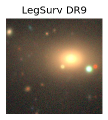 LegacySurvey: 1 sources in 3 arcsec Closest: d = 6.02 arcsec, 266.3 deg (east of north) photoz=0.1 (68% bounds 0.08, 0.12), type=PSF peak abs mag = -19.04 (68% bounds -18.56, -19.44) Consistent with synchrotron, g-r>0!
18. ZTF26aainuct (Afterglow?) [Back to Top] [Share] [Trigger Swift] [Fritz ] [Lasair ]RA, Dec: 138.94643, -5.05823 9h15m47.14s, -5d-3m-29.63sGalactic (l, b): 236.19138, 28.81409 ext(g-r) = 0.035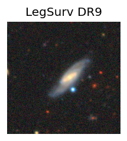 LegacySurvey: 1 sources in 3 arcsec Closest: d = 3.64 arcsec, 271.9 deg (east of north) photoz=0.09 (68% bounds 0.08, 0.1), type=SER peak abs mag = -18.92 (68% bounds -18.53, -19.16) Consistent with synchrotron, g-r>0!
19. ZTF26aaitsza (FBOT?) [Back to Top] [Share] [Trigger Swift] [Fritz ] [Lasair ]RA, Dec: 188.13197, 48.08834 12h32m31.67s, 48d 5m18.03sGalactic (l, b): 131.65629, 68.71832 ext(g-r) = 0.014peak abs mag = -19.21 LegacySurvey: 1 sources in 3 arcsec Closest: d = 1.83 arcsec, 244.7 deg (east of north) photoz=0.13 (68% bounds 0.1, 0.14), type=SER peak abs mag = -19.63 (68% bounds -19.16, -19.89) Consistent with synchrotron, g-r>0!
20. ZTF26aaivsss (Afterglow?) [Back to Top] [Share] [Trigger Swift] [Fritz ] [Lasair ]RA, Dec: 271.90523, -15.0096 18h 7m37.25s, -15d 0m-34.55sGalactic (l, b): 14.60104, 2.59404 ext(g-r) = 2.181PS1: 1 source in 3 arcsec Closest: d = 0.14 arcsec photoz=0.76+/-0.47 peak abs mag = -29.23 Consistent with synchrotron, g-r>0!
21. ZTF26aaivxqz (Afterglow?) [Back to Top] [Share] [Trigger Swift] [Fritz ] [Lasair ]RA, Dec: 264.49988, -17.82179 17h37m59.97s, -17d-49m-18.43sGalactic (l, b): 8.57135, 7.3147 ext(g-r) = 0.564PS1: 1 source in 3 arcsec Closest: d = 0.46 arcsec photoz=0.24+/-0.10 peak abs mag = -25.31
22. ZTF26aaiwgya (Afterglow?FBOT?) [Back to Top] [Share] [Trigger Swift] [Fritz ] [Lasair ]RA, Dec: 40.34297, 13.44998 2h41m22.31s, 13d26m59.94sGalactic (l, b): 159.71062, -41.43979 WARNING: -2.12 deg from ecliptic plane ext(g-r) = 0.11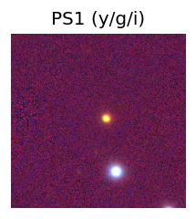 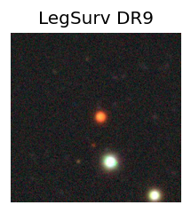 LegacySurvey: 1 sources in 3 arcsec Closest: d = 2.34 arcsec, 274.9 deg (east of north) photoz=0.21 (68% bounds 0.18, 0.26), type=PSF peak abs mag = -20.69 (68% bounds -20.38, -21.23)
23. ZTF26aaiyura (Afterglow?) [Back to Top] [Share] [Trigger Swift] [Fritz ] [Lasair ]RA, Dec: 209.45043, -10.35019 13h57m48.10s, -10d-21m-0.67sGalactic (l, b): 328.39838, 49.2121 WARNING: 1.58 deg from ecliptic plane ext(g-r) = 0.057peak abs mag = -17.59 PS1: 1 source in 3 arcsec Closest: d = 4.73 arcsec photoz=0.04+/-0.00 peak abs mag = -16.92 Consistent with synchrotron, g-r>0!
24. ZTF26aaiyyzb (FBOT?) [Back to Top] [Share] [Trigger Swift] [Fritz ] [Lasair ]RA, Dec: 217.60107, 18.4141 14h30m24.26s, 18d24m50.76sGalactic (l, b): 17.20893, 65.63596 ext(g-r) = 0.025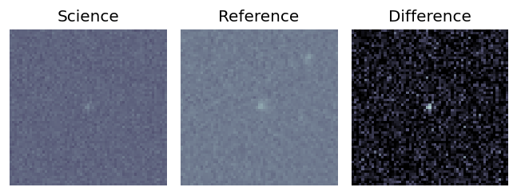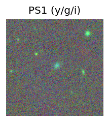 peak abs mag = -20.28 LegacySurvey: 1 sources in 3 arcsec Closest: d = 1.38 arcsec, 290.6 deg (east of north) photoz=0.13 (68% bounds 0.1, 0.17), type=EXP peak abs mag = -19.44 (68% bounds -18.79, -20.09) Consistent with synchrotron, g-r>0!
25. ZTF26aaiyyzd (FBOT?) [Back to Top] [Share] [Trigger Swift] [Fritz ] [Lasair ]RA, Dec: 221.75325, 19.11236 14h47m0.78s, 19d 6m44.50sGalactic (l, b): 22.28674, 62.31902 ext(g-r) = 0.038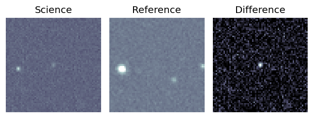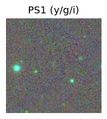 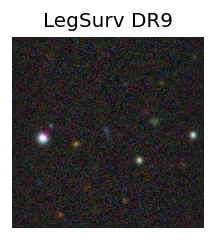 peak abs mag = -21.40 LegacySurvey: 1 sources in 3 arcsec Closest: d = 0.46 arcsec, 68.4 deg (east of north) photoz=0.14 (68% bounds 0.09, 0.37), type=EXP peak abs mag = -19.84 (68% bounds -18.82, -22.16)
26. ZTF26aaizjuc (FBOT?) [Back to Top] [Share] [Trigger Swift] [Fritz ] [Lasair ]RA, Dec: 178.87787, 36.39288 11h55m30.69s, 36d23m34.38sGalactic (l, b): 171.46496, 74.9568 ext(g-r) = 0.023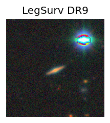 peak abs mag = -20.23 LegacySurvey: 1 sources in 3 arcsec Closest: d = 1.84 arcsec, 185.3 deg (east of north) photoz=0.12 (68% bounds 0.1, 0.14), type=SER peak abs mag = -19.8 (68% bounds -19.31, -20.25)
27. ZTF26aajaufd (Afterglow?) [Back to Top] [Share] [Trigger Swift] [Fritz ] [Lasair ]RA, Dec: 306.64526, 11.60715 20h26m34.86s, 11d36m25.76sGalactic (l, b): 54.7704, -15.06198 ext(g-r) = 0.147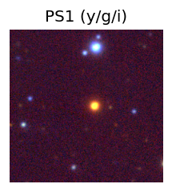 
 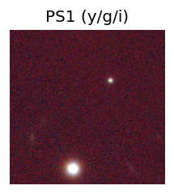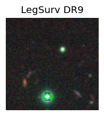
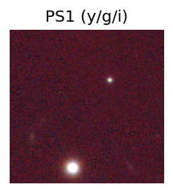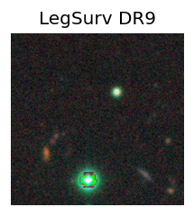


 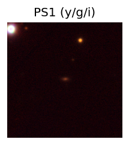
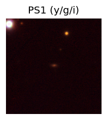


 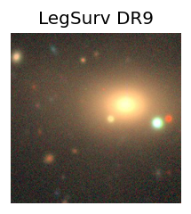
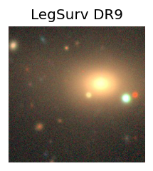
 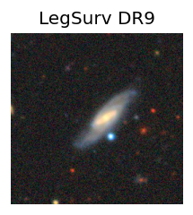
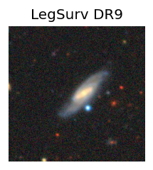


 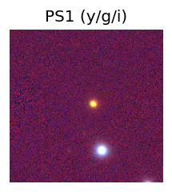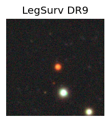
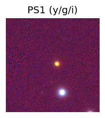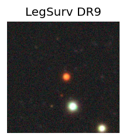


 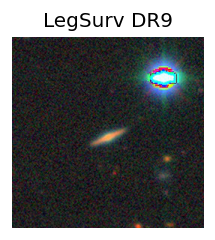
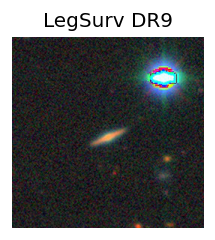 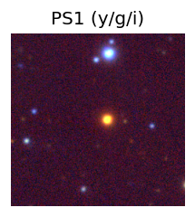
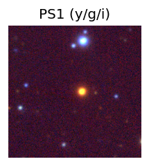